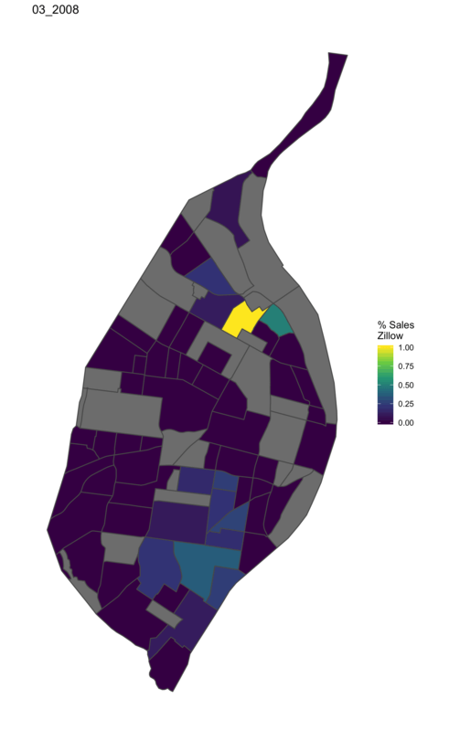

This page is dedicated to my mapping visualization projects
This is a choropleth map of non-white race estimates made with the D3 javascript library.
This gif is an animation of data from Zillow on sales of homes that were previously foreclosed. It was created in R with ggplot2 and animated with magick.

This map with tooltips was made in R with ggiraph.